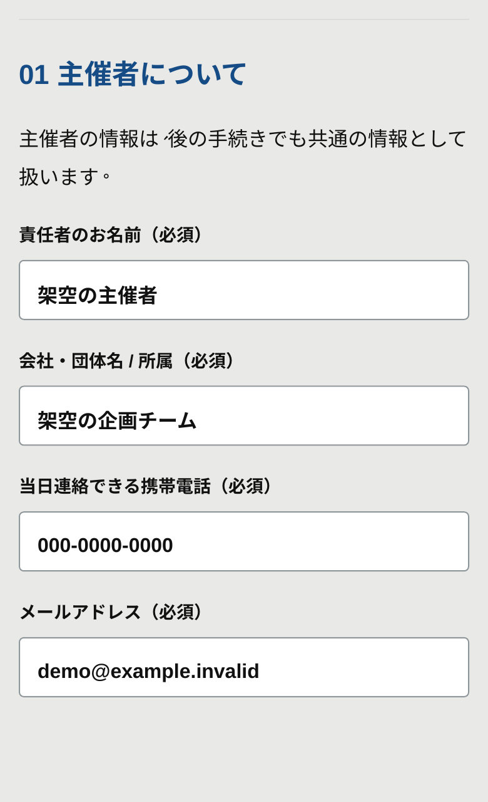
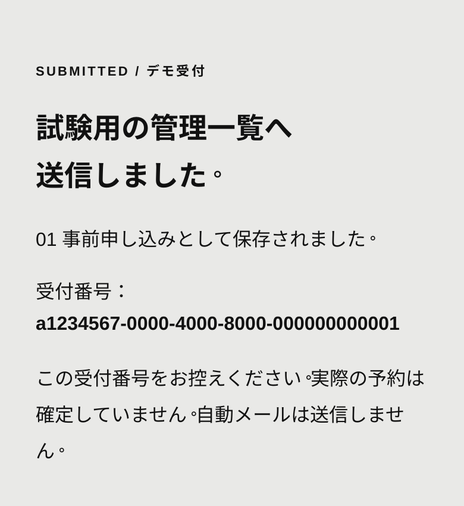

EVENT APP GUIDE
申請者向けカタログ
今回のサイトの使い方企画を伝え、
企画を伝え、
受付を確かめる。
イベントの内容と開催希望を申請サイトでまとめ、運営の管理一覧へ届けます。関係者で申請から受付までを確認するためのガイドです。
4STEPS
デモ版
関係者確認用のデモです。送信内容は試験用コピーに保存されます。架空の情報でお試しください。原票は変更せず、実際の予約も成立しません。
01 / WHY
申請から、運営の確認へ。
企画と希望をまとめる
主催者・企画・利用スペース・希望日時・確認事項を、ひとつのフォームに。
管理一覧へ届ける
確認画面から送信すると、運営が使う試験用の管理一覧へ新しい案件として届きます。
受付番号を確認する
送信後に受付番号を表示。入力しただけでは送信されません。送信結果を確認します。
02 / HOW
入力から受付まで、4ステップ。
- 01
「申請の入力を試す」を開く
主催者と企画、2つの希望日・時間・スペースを入力します。今回は実際の個人情報を使わず、架空の内容で確認してください。
- 02
確認事項を読み、入力内容を確認
事前審査の確認事項を読み、必須項目を入力して確認画面へ。直すときは「入力に戻る」。チェック・署名もデモ用の記録です。
- 03
「試験用の管理一覧へ送信する」
送信先と保存内容を確認してから押します。送信中は、そのまま結果の表示を待ちます。
- 04
「送信しました」と受付番号を確認
受付番号を控えます。01 事前申し込みとして保存され、運営の確認対象になります。受付は予約確定ではありません。
03 / FLOW
開催までをつなぐ、6段階。
- 01事前申し込み
- 02詳細すり合わせ
- 03承認
- 04開催準備
- 05当日
- 06結果報告
申請→試験用シートへの保存→管理一覧・詳細への反映を確認済みです。正式な予約・最終承認・同意取得は行いません。利用同意書や詳細ヒアリングの原典全体の統合は、まだ公開版に反映されていません。
04 / SCREENS
入力画面と、送信後の目印。
A申請フォーム

B送信後の受付番号

このデモで試せること
- 申請内容の入力・確認・修正
- 試験用コピーへの送信・保存
- 受付番号の表示、管理側での受付確認
現在行われないこと
- 実際の予約確定・正式な最終承認
- 申請者への自動メール・承認通知
- 正式な利用同意・電子署名の取得
送信結果が分からないときは。
画面に案内された「同じ送信の結果を再確認する」を使います。内容を変えたり、再読み込み・別タブから再送信したりせず、同じ送信の結果を確認してください。
申請から受付まで、試してみる。
架空の主催者・企画で確認してください。